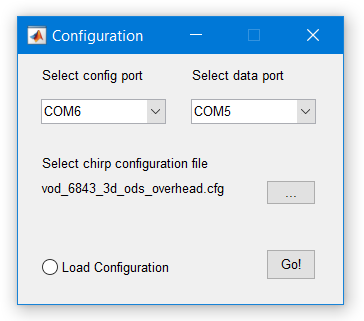
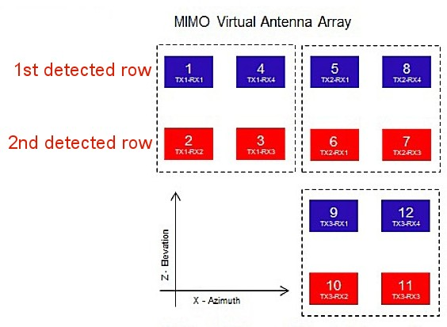
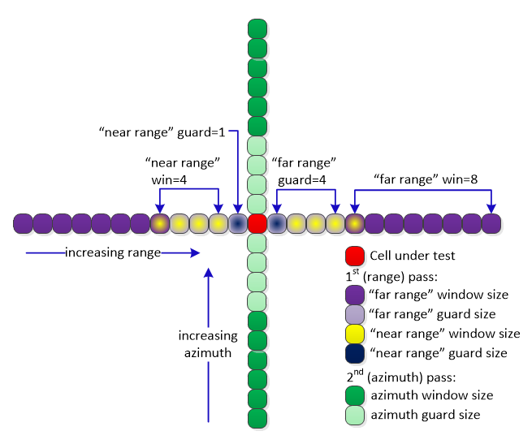

Overview
===========
This lab demonstrates the use of TI 60GHz mmWave sensors to detection children, adults and animals using the
xWR6843AOP and xWR6843ISK-ODS sensor modules mounted in the vehicle roof, overhead configuration. A 3D point
cloud (range-azimuth-elevation) is produced by generating range-azimuth and azimuth-elevation heatmaps along with CFAR.
Zone mapping using cuboid volumes and state machine algorithms run onboard the xWR6843 mmWave sensor and produce zone
occupancy decisions.
Refer to the [TI Reference Design](https://www.ti.com/tool/TIDEP-01023) for more details on the algorithm and results from running this demo.
Note: In this version, the AWR6843 outputs the spherical-coordinate point cloud. Zone mapping and decision state machine
processing are perform for the short term in Matlab. These will be moved to the xWR6843 in a near term release to the mmWave Automotive Toolbox.
<img src="images/overhead_vod_overview_block.png" width="800"/>
[[r! xWR6843 ES2.0 Only
This lab is only compatible with ES2.0 version of xWR6843. Check the device version on your xWR6843 using the on-chip
device markings as shown below>
1. If line 4 reads `678A`, you have an ES2 device. In this case, this lab is compatible with your EVM.
2. If line 4 reads `60 GHZi`, you have an older ES1 device. In this case, the lab is NOT compatible with your EVM.
ES2 xWR6843ISK-ODS boards are orderable from the EVM link below.
<img src="images/iwr6843_silicon_revision.png" width="400"/>
]]
# Requirements
-----------
### Prerequisite 1
[[y! Run Out of Box Demo
Before continuing with this lab, users should first run the out of box demo for the EVM.
This will enable users to gain familiarity with the sensor's capabilities as well as the various tools used across all labs in the mmWave Automotive Toolbox.
]]
### Prerequisite 2
[[r! XDS110 firmware downgrade required
The XDS110 Firmware runs on the microcontroller onboard the MMWAVEICBOOST Carrier Card which provides the JTAG Emulation and serial port communication over the XDS110 USB port. We have observed packet loss on the serial port (COM ports) with some versions of the XDS110 firmware which can cause the demo to fail.
To avoid packet loss, users must downgrade the XDS110 firmware on their carrier card to version 2.3.0.18 as given below:
1. Go to the <a href="https://software-dl.ti.com/ccs/esd/documents/xdsdebugprobes/emu_xds_software_package_download.html" target="_blank">XDS Emulation Software (EMUPack) Download</a> page and download version `8.1.0.00005` (only 32-bit version is available for this release but it is compatible with 64-bit Windows).
2. Run the installer to install the EMU pack on your Windows PC.
3. Follow the instructions provided in `XDS110_firmware_downgrade.pdf` included in the docs directory to downgrade the firmware and power cycle the EVM.
This issue will be fixed in a future emulation pack update which will be available on the <a href="https://software-dl.ti.com/ccs/esd/documents/xdsdebugprobes/emu_xds_software_package_download.html" target="_blank">XDS Emulation Software (EMUPack) Download</a> page
]]
### Prerequisite 3
[[y! Calibrating the demo configuration for your Antenna Module
In order to get the best detection performance, users should run the Out of Box Demo
<a href="file:///C:/ti/mmwave_sdk_03_05_00_04/packages/ti/demo/xwr68xx/mmw/docs/doxygen/html/index.html#Calibration_section" target="_blank">
Range Bias and Rx Channel Gain/Phase Measurement and Compensation</a> procedure to get the calibration coefficients for their Antenna Module and replace the default coefficients in the configuration file `chirp_configs\vod_6843_aop_overhead_5zone.cfg` with the values returned by the calibration procedure.
The following command in the chirp configuration file needs to be updated with the calibrated values.
**compRangeBiasAndRxChanPhase `0 1 0 1 0 1 0 1 0 1 0 1 0 1 0 1 0 1 0 1 0 1 0 1 0`** (This is the default command)
The updated command will look similar to the following (but with different values)
**compRangeBiasAndRxChanPhase `0.1044657 -0.11493 0.79419 -0.13123 -0.83478 -0.08484 -0.77560 0.04535 0.72226 0.09491 0.81415 -0.41129 -0.69214 -0.27069 -0.64630 0.20770 0.63818 0.67627 0.69116 -0.90146 -0.43289 -0.81061 -0.48209 0.72995 0.50214`**
To run the calibration procedure, please follow the instructions provided in the Out of Box demo HTML documentation given below:
<a href="file:///C:/ti/mmwave_sdk_03_05_00_04/packages/ti/demo/xwr68xx/mmw/docs/doxygen/html/index.html#Calibration_section" target="_blank">Range Bias and Rx Channel Gain/Phase Measurement and Compensation</a>
]]
<a name="quickstart"></a>
### Hardware Requirements
Item | Details
--------------------------|-----------------
xWR6843AOPEVM Antenna Module Board | [xWR6843AOPEVM ES2.0 Antenna Module](http://www.ti.com/tool/AWR6843AOPEVM)
xWR6843ISK-ODS Antenna Module Board | [xWR6843ISK-ODS ES2.0 Antenna Module](http://www.ti.com/tool/IWR6843ISK-ODS)
MMWAVEICBOOST Carrier Board | OPTIONAL: [MMWAVEICBOOST Carrier Board](http://www.ti.com/tool/MMWAVEICBOOST) for CCS based development and debugging
| Note: The rest of this document will refer to the above board combination as <b>EVM</b> .
|
Computer | PC with Windows 7 or 10. If a laptop is used, please use the 'High Performance' power plan in Windows.
Micro USB Cable | Due to the high mounting height of the EVM, an 15ft+ cable or USB extension cable is recommended.
Power Supply | 5V, >3.0A with 2.1-mm barrel jack (center positive). The power supply can be wall adapter style or a battery pack with a USB to barrel jack cable. Due to the high mounting height, a barrel jack extension cable is recommended to extend the 5v power supply cable.
Note: There are both AWR and IWR 6843 devices. Please consult the datasheet for details on the differences between the devices. However, either AWR or IWR versions can be used interchangeably as long as the correct antenna is used (AOP or ODS).
### Software Requirements
Tool | Version | Download Link
----------------------------|---------------------------|--------
TI mmWave SDK | 3.5.0.x | [TI mmWave SDK 3.5.0.x](http://software-dl.ti.com/ra-processors/esd/MMWAVE-SDK/03_05_00_04/index_FDS.html) and all the related tools are required to be installed as specified in the [mmWave SDK release notes](http://software-dl.ti.com/ra-processors/esd/MMWAVE-SDK/03_05_00_04/exports/mmwave_sdk_release_notes.pdf)
mmWave Automotive Toolbox | Latest | Download and install the toolbox. Go to [Using TI Resource Explorer & the mmWave Automotive Toolbox](../../../../docs/readme.html) for instructions.
MATLAB Runtime | 2017a (9.2) | Exact version required. https://www.mathworks.com/products/compiler/matlab-runtime.html
Uniflash | Latest | Uniflash tool is used for flashing TI mmWave Radar devices. [Download offline tool](http://www.ti.com/tool/UNIFLASH) or use the [Cloud version](https://dev.ti.com/uniflash/#!/)
### Antenna Coordinate Transforms
Mounting the device so that the antenna faces the floorboard causes a transform of the coordinates from the normal
vertical mounting position. For both antenna patterns shown below, the coordinate system shall be as follows:
<img src="images/coordinate_transform.jpg" width="500" class="img-responsive"/>
This requires measuring the distance from the floor to the antenna. This distance must be specified in the first parameter
of the "sensorPosition" CLI command, in meters. It is better to err on side of a slightly larger measurement, so that it is
not possible for Y values to go negative when the sensorPosition value is subtracted from native range measurements. This
coordinate orientation must also be used in the "cuboidDef" CLI commands that are used to define each occupant zone.
* AOP Antenna:
The AOP Antenna is shown in the following image along with the virtual antenna array. The provided
configuration file **chirp_configs/vod_6843_aop_overhead.cfg** provides the CLI commands necessary to
support this antenna.
<img src="images/aop_antenna.jpg" width="640" class="img-responsive"/>
* ODS Antenna:
The ODS Antenna is shown in the following image along with the virtual antenna array. The provided
configuration file **chirp_configs/vod_6843_ods_overhead_5zone.cfg** provides the CLI commands necessary to
support this antenna.
<img src="images/ods_antenna.jpg" width="640" class="img-responsive"/>
* Other Antennas:
Other antenna layouts may be used in this demo software, but will require adjusting the following
CLI commands to match the antenna: (see descriptions below for command arguments)
- antGeometry0
- antGeometry1
- antPhaseRot
Note: The MVDR algorithm requires 4 or 8 virtual antennas in the azimuth direction.
Quickstart
===========
<a name="physical_setup"></a>
1. Setup the EVM for Flashing Mode
-----------
* For AWR6843ISK-ODS in Standalone/Modular Mode: Follow the instructions for [Hardware Setup of xWR6843AOP for Flashing Mode](hardware_setup/hw_setup_aop_modular_mode_flashing.html) or [Hardware Setup of xWR6843ISK/ODS for Flashing Mode](hardware_setup/hw_setup_isk_ods_modular_mode_flashing.html)
* For MMWAVEICBOOST + Antenna Module setup: Follow the instructions for [Hardware Setup for Flashing in MMWAVEICBOOST Mode](hardware_setup/hw_setup_mmwaveicboost_mode_flashing.html)
<a name="flash_the_evm"></a>
2. Flash the EVM using Uniflash
-----------
Flash the binary listed below using UniFlash. Follow the instructions for [using UniFlash](software_setup/using_uniflash_with_mmwave.html)
BIN Image Name | Location
--------------------------|------------
overhead_3d_vod_demo.bin | `<AUTOMOTIVE_TOOLBOX_INSTALL_DIR>\mmwave_Automotive_toolbox_<VER>\labs\incabinsensing\`<br>`overhead_mount_occupancy\prebuilt_binaries\overhead_3d_vod_demo.bin`
3. Setup the EVM for Functional Mode
-----------
* For AWR6843ISK-ODS in Standalone/Modular Mode: Follow the instructions for [Hardware Setup of xWR6843AOP for Functional Mode](hardware_setup/hw_setup_aop_modular_mode_functional.html) or [Hardware Setup of xWR6843ISK/ODS for Functional Mode](hardware_setup/hw_setup_isk_ods_modular_mode_functional.html)
* For MMWAVEICBOOST + Antenna Module setup: Follow the instructions for [Hardware Setup of MMWAVEICBOOST + Antenna Module for Functional Mode](hardware_setup/hw_setup_mmwaveicboost_mode_functional.html)
<a name="run_the_lab"></a>
4. Run the Lab
-----------
### 1. EVM Mounting and Test Setup
The sensor should be mounted on the ceiling, so that the antenna is in the center of the vehicle from side to side. The top of the antenna
should be pointing towards the rear of the vehicle, and the position in Z (please refer to the illustration above, in Antenna Coordinate Transforms)
should be just behind the front row head rests. You should then measure the distance to the lowest part of the footwell under the sensor
and enter this into sensorPosition command in your chirp configuration file.
For ease of testing and safety, it is recommended to use appropriately long enough cables so that you can fasten them out of the way to
facilitate entering and exiting the vehicle without getting tangled in them. It is also recommended to have the test operator running
the GUI a few feet away from the vehicle to avoid contaminating the results.
For best results, please check to make sure that the defined zones roughly match your vehicle cabin. See below for zone definition details.
It is also possible to test in a lab environment by mounting the EVM on a camera tripod, but the results will not be the same due
to the reflective surfaces inside a vehicle. In this case, you will want to replicate the zone/cuboid distances as much as possible,
and again, entering the height of the sensor into the sensorPosition CLI command.
### 2. Launch the Visualizer
[[y! MATLAB Runtime Version R2017a (9.2)
**Exact version** R2017a (9.2) required. Download from: https://www.mathworks.com/products/compiler/matlab-runtime.html]]
1. Navigate to `<AUTOMOTIVE_TOOLBOX_INSTALL_DIR>\mmwave_automotive_toolbox_<VER>\labs\incabinsensing\`<br>`overhead_mount_occupancy\gui`
2. Double click to launch **overhead_vod_visualizer.exe**.
3. A black console window will appear. After 30-60sec, a Configuration window will appear as shown below.
### 3. Provided Example Configurations
The following configurations are provided as configuration examples
Chirp Configuration | Description
---------------------------|---------------------------------------------------------------------
vod_6843_aop_overhead_4zone.cfg | Four zone configuration for AOP (no 2nd row middle seat zone)
vod_6843_aop_overhead_5zone.cfg | Five zone configuration for AOP
vod_6843_aop_overhead_intruder.cfg | Same as _4zone, but with an intruder zone on both sides of the vehicle
vod_6843_ods_overhead_5zone.cfg | Five zone configuration for the ODS EVM
### 4. Configure Visualizer

[[y Note:
The GUI uses the same configuration commands that are sent to configure the target.
Only the COM ports need to be specified in the opening panel.
]]
1. Select the EVM Control and Data COM ports using the respective dropdowns.
2. You should see the Chirp configuration file automatically selected in the Configuration dialogue. But if not, browse to select the following file provided in the `chirp_configs` directory:
-`<AUTOMOTIVE_TOOLBOX_INSTALL_DIR>\mmwave_automotive_toolbox_<VER>\labs\incabinsensing\`<br>`overhead_mount_occupancy\chirp_configs\vod_6843_aop_overhead_5zone.cfg`
3. Check the **Load Configuration** radio control and press **Go!** to start the Visualizer.
- The visualizer can also be connected to an already running instance of the Overhead VOD software on the EVM by keeping the **Load Configuration** radio button un-selected.
- In this mode, the Visualizer does not send the Chirp configuration commands at start-up as the demo software is expected to be already running and configured.
4. The Visualizer window will appear as shown below and after several seconds, the visualizer should start showing the point cloud and occupancy decisions in their respective panels:
<img src="images/visualizer_running.png" width="700" class="img-responsive"/>
### 5. Understanding the Visualizer Output
The Visualizer window is divided into five panels as shown in the annotated picture below:
1. **Statistics**: This section prints real-time information from the target: Frame number, both processed and (target), and a Zone table
that displays the occupancy state, number of detections in the zone, and average SNR of the detections. When the Count button is clicked,
the Points column becomes the "Frame" count (total number of frames that have been counted), and the SNR column becomes "Count" - the number of
frames with positive occupancy state.
2. **Chirp Configuration**: This panels shows the static chirp configuration loaded at startup time.
3. **Control**: This panel provides an Exit button, a Record button (saves frame by frame point cloud and occupancy data). In addition,
there are two sub-panels, which independently allows either the Occupancy Display to be paused, or selection/pausing of a display in
the Point Cloud panel.
4. **Occupancy**: This panel pictorally displays the output of the state machine, which are the occupancy decisions.
5. **Point Cloud**: This panel can display one of several displays: "2D Point Cloud" shows and overhead view of the detected points, along
with the zone boundaries when that zone decision is positive. The zone boundary turns red when there is excessive movement in the zone.
The state machine will flag all zones "overloaded" when any one zone is flagged. This is because excessive energy in one
zone may cause excessive energy in neighboring zones as well. In this condition, the state machine will freeze processing (it will hold the
current empty or occupied state) until the overload condition abates, or for a minimum of 5 frames (1 second).
<img src="images/visualizer_annotated.png" width="700" class="img-responsive"/>
### 6. Re-playing previously saved output (Requires full MATLAB license)
As described in the previous section, the `Overhead_vod_visualizer` saves the EVM UART output (point cloud and target information) in files named **fHistRT_`xxxx`.mat** where each file contains 1000 frames of information. These saved fHist files can be re-played offline either by using the `Overhead_demo_fHist_player` executable or by modifying a flag in the Visualizer source (if running it in Matlab) as shown below:
1. Navigate to `<AUTOMOTIVE_TOOLBOX_INSTALL_DIR>\mmwave_automotive_toolbox_<VER>\labs\incabinsensing\`<br>`overhead_mount_occupancy\gui`
2. Copy the previously saved **fHistRT_xxxx.mat** files and the chirp configuration used for the data capture to the directory specified above.
3. Open **overhead_vod_visualizer.m** to launch it.
4. Edit the source file `overhead_vod_visualizer.m` and set **`liveRecording = false`** at the begining of the file and **`chirpConfigurationFileName = <full path to the cfg file>`** and run the script in Matlab.
<a name="configuration commands"></a>
Zone Definition
===========
You may define five to eight zones in the chirp configuration file for target and GUI processing. The Occupancy Display in the GUI supports
a fixed five zones, and so the first five defined zones must match these positions. Note: If you do not wish to use some of these zones, simply
define these zones as "NULL" (explained below). For example, you may not want to monitor zones 1 and 2 (the front row). Set these to NULL.
Since our point cloud includes range, azimuth and elevation, we need a way to define our zones as volumes. We do this by
defining a number of cuboids, which are simply rectangular volumes, having length (range), width (azimuth), and height (elevation).
These cuboids will approximate the space where we want to look for occupants.
In this demo, we may define 1, 2 or 3 cuboids per zone. A detected point in the point cloud residing any any of these cuboids will
be included in the calculations for determining occupancy. If your zone is a cargo area, you may need to define only one cuboid to
approximate the space. For normal vehicle seats, we need to check the foot well areas for children and pets. So we define three cuboids:
- Cuboid 1: Head and chest area
- Cuboid 2: Lap area
- Cuboid 3: Foot well
This is illustrated here:
<img src="images/zone_cuboid_def.jpg" width="320"/>
Zones may overlap or be disjoint. The only check for zone inclusion is that a detected point is within the boundaries of at least one cuboid.
It is therefore not a good idea to define Zone 1 and Zone 2 (for example) with cuboids that overlap, as this will reduce performance.
Also, there is no performance difference (in terms of MIPs) if cuboids are large or small. The boundary checks are the same
in either case. It **is** a good idea to leave a space in between zones, since detection points from a zone will spread out from the occupant's
actual position, more as the amount of occupant movement increases.
Cuboids are defined by the **cuboidDef** CLI command in a chirp configuration file. Here is a sample definition of five zones:
```java
% zone 1 (driver) cuboids
cuboidDef 1 1 0.15 0.75 -0.6 0.15 0.95 1.3
cuboidDef 1 2 0.15 0.75 -0.9 -0.1 0.4 0.95
cuboidDef 1 3 0.15 0.75 -0.9 -0.6 0.0 0.4
% zone 2 (front passenger) cuboids
cuboidDef 2 1 -0.75 -0.2 -0.6 0.15 0.95 1.3
cuboidDef 2 2 -0.75 -0.2 -0.9 -0.1 0.4 0.95
cuboidDef 2 3 -0.75 -0.2 -0.9 -0.6 0.0 0.4
% zone 3 (2nd row driver side) cuboids
cuboidDef 3 1 0.15 0.75 0.3 1.0 0.85 1.3
cuboidDef 3 2 0.15 0.75 0.1 1.0 0.5 0.85
cuboidDef 3 3 0.15 0.75 0.1 0.5 0.0 0.5
% zone 4 (2nd row middle) cuboids
cuboidDef 4 1 -0.12 0.12 0.3 1.0 0.85 1.3
cuboidDef 4 2 -0.12 0.12 0.1 1.0 0.5 0.85
cuboidDef 4 3 -0.12 0.12 0.1 0.5 0.0 0.5
% zone 5 (2nd row passenger side) cuboids
cuboidDef 5 1 -0.75 -0.2 0.3 1.0 0.85 1.3
cuboidDef 5 2 -0.75 -0.2 0.1 1.0 0.5 0.85
cuboidDef 5 3 -0.75 -0.2 0.1 0.5 0.0 0.5
```**Example Zone/Cuboid CLI Definitions**
The first pair of arguments define the parent zone, and the cuboid number within the zone, the second pair is the minumum
and maximum X (azimuth), the third pair is the min/max Z (range), and finally the min/max Y (height). Notice that the driver
side X values are positive while the passenger side are negative. Likewise, second row Z values are all positive while
front row Zs are mostly negative. All Y values are positive since the floor is 0.0meters.
To define a NULL zone, simply define a zone with a single cuboid, and set all parameters to zero. This makes it impossible
for the zone assignment function to map any points to the zone, and the zone will stay silent.
```java
% zone 4 (NULL zone)
cuboidDef 4 1 0.0 0.0 0.0 0.0 0.0 0.0
```**Example NULL Zone Definition**
To help with cuboid placement, the "3D Zones Row 1[2]" displays may be enabled as shown in the image below. This display
will show the real-time point cloud in 3D space as they relate to the cuboid positions.
<img src="images/visualizer_3d_cuboids.png" width="700"/>
Configuration File Commands
===========
Chirp Configuration files are located at `C:<install dir>\chirp_configs`.
In addition to the normal mmWave chirp configuration CLI commands (please refer to the SDK's user guide for these commands),
there are several commands that are specific to the Overhead Occupancy Detection Demo:
Command | Parameters (in command line order)
----------------|------------
sensorPosition | height of sensor above the floorboard, in meters.
| elevation tilt of the sensor, above horizontal, in degrees.
dynamicRACfarCfg | subframe number. Only -1 is supported in this demo
| range bin start index (first range bin processed by CFAR)
| range bin end skip (ending range bins not processed by CFAR)
| azimuth start index (first azimuth bin processed by CFAR)
| azimuth end skip (ending azimuth bins not processed by CFAR)
| search window size - "far" range
| search window size - azimuth
| search window size - "near" range
| guard window size - "far" range
| guard window size - azimuth
| guard window size - "near" range
| "K0" relative threshold applied to minumum search window power
| threshold used in the second (azimuth) search pass
| "sidelobe" threshold used in the second search pass
| second search pass enable flag
dynamicRangeAngleCfg | subframe number. Only -1 is supported in this demo
| angle search step (inter-bin resolution) 1.875 creates a range-az heatmap with 64 azimuth rows. Smaller values create larger heatmaps, increasing memory and processing requirements.
| MVDR "alpha" (diagonal loading factor) 0.03 is recommended.
| range-az-elev detection method. Only 1 is supported in this demo.
| Doppler estimation detection method. Only 0 is supported in this demo (Doppler is not calculated).
dynamic2DAngleCfg | subframe number. Only -1 is supported in this demo
| elevation angle search step (inter-bin resolution) 1.875 creates an azimuth-elevation heatmap with 64 elevation rows. Smaller values create larger heatmaps, increasing memory and processing requirements.
| MVDR "alpha" (diagonal loading factor) 0.03 is recommended.
| max number of peaks to find in elevation search. 1 is the only supported value at this time.
| peak expansion: Only 0 is supported at this time (not used).
| elevation only flag: Only 1 is supported in this demo (elevation search uses range-azimuth detections)
| "sidelobe" threshold in elevation search
| peak expansion relative threshold to include neighbors of peak in detected point.
| peak expansion SNR threshold to allow peak expansion of detected peak.
antGeometry0 | azimuth offset of all available virtual antennas (see device and SDK user guides)
antGeometry1 | elevation offset of all available virtual antennas (see device and SDK user guides)
antPhaseRot | phase rotation needed for all available virtual antennas (see device and SDK user guides)
fovCfg | subframe number. Only -1 is supported in this demo
| azimuth field of view in degrees
| elevation field of view in degrees
numZones | number of zones to define, min = 5, max = 8. The first 5 zones must correspond to the zone numbers shown in the
| Occupancy Display. If you only want 2 operational zones, define the others as NULL zones. (see cuboidDef below).
occStateMach | threshold 1: number of detected points in a zone to enter the occupied state
| threshold 1: average SNR of detected points in a zone to enter the occupied state
| threshold 2: number of detected points in a zone to enter the occupied state
| threshold 2: average SNR of detected points in a zone to enter the occupied state
| number of detected points in a zone to remain in the occupied state
| average SNR of detected points in a zone to remain in the occupied state
| number of frames with less than ceiling points (see next parameter) to hold occupied state before dropping
| ceiling points (max points) in a zone during "hold" frames.
| average SNR in a zone to declare overload condition (excessive movement). Causes state machine to freeze all zones in that row.
interiorBounds | min X (azimuth) -X towards passenger side, +X towards driver side (zone1)
| max X (azimuth)
| min Z (range) -Z towards front of vehicle, +Z towards the rear
| max Z (range)
cuboidDef | parent zone number (1 based)
| cuboid number within the zone (also 1 based). min = 1, max = 3 per zone
| min X (azimuth)
| max X (azimuth)
| min Z (range)
| max Z (range)
| min Y (elevation) 0.0 is smallest value (cannot be negative)
| max Y (elevation) cannot be larger than the height specified in sensorPosition
| (Note: to define a NULL zone, define it with a single cuboidDef command setting all X,Y,Z values to 0.0)
Algorithm Overview
===========
This demo is based on the Overhead People Counting demo found in the mmWave Industrial Toolbox. Several changes have been made
to better suit Vehicle Occupancy. Alternative algorithms found in the Overhead People Counting demo have been removed to reduce
overall memory footprint. The high level flow is described here:
<img src="images/overhead_vod_alg_block.png" width="800"/>
Range processing is generic (nothing new here), and is controlled by the HWA (Hardware Accelerator) to produce the radar cube. All frame rate algorithms are performed by
the DSP. Input configuration and output scaling of the point cloud is performed by the MSS ARM.
The first step of frame processing is range-azimuth heatmap generation. The calculation performed is the standard MVDR
algorithm used in other Incabin and Industrial labs, with two exceptions:
1) The code now identifies two rows of virtual antennas with the most number of antennas in the azimuth direction. MVDR will
be performed on each row separately, as shown here:

2) After MVDR is calculated on each antenna row, the values are squared and added together to use as the range-azimuth heatmap.
As the range rows are processed, they are natively in range-row order. They are transposed to azimuth-row order for CFAR processing:
<img src="images/rangeaz_order.jpg" width="800"/>
CFAR is performed next. The variant used is a two-pass CASO (cell averaging smaller of) with one significant enhancement: An additional "near
range" search window is now used in the first (range) pass. These new parameters are included in the CFAR configuration command, **dynamicRACfarCfg**.
This results in four window averages being calculated, a "near" and "far" average on both sides of the cell under test. The minimum of these
four averages is found, thresholded, and if less than the peak power, the cell is kept as an initial detection, which is then confirmed
by the second pass.
So, with the default configuration, the "far range" and "near range" windows appear as follows, overlapping by 1 cell:

The outputs of the range-azimuth CFAR are:
- Range and azimuth detections, specified as indexes into the range-az heatmap.
- Noise. This is the weakest cell found in the search window.
- SNR estimate. This is the peak value of the search window divided by the Noise value.
Following CFAR, the radar cube is accessed again and rows of the azimuth-elevation heatmap are generated for ranges where the
initial detections were found. This is the standard "angle only" processing, and estimates the elevation of each range-azimuth detection
found by CFAR. It is configured with the **dynamic2DAngleCfg** CLI command. The one difference from traditional processing is the Doppler indexes are not scanned, because we have not processed
any Doppler data. The final point cloud is complete, and is sent to the MSS for scaling and output.
The output of DSP's frame processing is the point cloud: (values per each detected point)
- Range, azimuth and elevation angles (spherical coordinates)
- Noise. This is the weakest cell found in the CFAR search window.
- SNR estimate from CFAR.
- Doppler (set to zero)
Additional DSP processing coming in an upcoming release: (these are currently done in the GUI)
- Zone mapping of the point cloud
- Occupancy State machine
Developer's Guide
===========
Build the Firmware from Source Code
-----------
<a name='reqs'></a>
### 1. Software Requirements
Tool | Version | Download Link
----------------------------|-----------------|--------------
mmWave Automotive Toolbox | Latest | Download and install the toolbox. Go to [Using TI Resource Explorer & the mmWave Automotive Toolbox](../../../../docs/readme.html) for instructions.
TI mmWave SDK | 3.5.x.x | [TI mmWave SDK](http://software-dl.ti.com/ra-processors/esd/MMWAVE-SDK/03_05_00_04/index_FDS.html) and all the related tools are required to be installed as specified in the [mmWave SDK release notes](http://software-dl.ti.com/ra-processors/esd/MMWAVE-SDK/03_05_00_04/exports/mmwave_sdk_release_notes.pdf)
Code Composer Studio | 8.3.1 (min) | [Code Composer Studio v8.3.1](http://processors.wiki.ti.com/index.php/Download_CCS#Code_Composer_Studio_Version_8_Downloads)
### 2. Import Lab Project
To import the source code into your CCS workspace, CCS projects are provided in the lab at the paths given below.
* Start CCS and setup workspace as desired.
* Import the project(s) specified below to CCS. See instructions for importing [here](../../../../docs/readme.html#import-ccs-projects-from-the-mmwave-automotive-toolbox-into-code-composer-studio)
Project Name | Location in Automotive Toolbox
-------------------------|-----------------------------
overhead_3d_vod_68xx_dss | `<AUTOMOTIVE_TOOLBOX_INSTALL_DIR>\mmwave_automotive_toolbox_<VER>\labs\incabinsensing\`<br>`overhead_mount_occupancy\src`
overhead_3d_vod_68xx_mss | `<AUTOMOTIVE_TOOLBOX_INSTALL_DIR>\mmwave_automotive_toolbox_<VER>\labs\incabinsensing\`<br>`overhead_mount_occupancy\src`
* Verify that the import occurred without error: in CCS' Project Explorer both **overhead_3d_vod_68xx_dss** and **overhead_3d_vod_68xx_mss** projects should appear.
[[r! Error during Import to IDE
If an error occurs, check that the software dependencies listed above have been installed. Errors will occur if necessary files are not installed in the correct location for importing.
]]
### 3. Build the Lab
The DSS project must be built before the MSS project.
1. Select the **overhead_3d_vod_68xx_dss** in **Project Explorer** so it is highlighted. Right click on the project and select **Rebuild Project**. The DSS project will build.
2. Select the **overhead_3d_vod_68xx_mss** in **Project Explorer** so it is highlighted. Right click on the project and select **Rebuild Project**. The MSS project will build, and the lab binary will be constructed automatically.
3. On successful build, the following should appear:
* In `<PROJECT_WORKSPACE_DIR>\overhead_3d_vod_68xx_dss `→` Debug`
* **overhead_3d_vod_68xx_dss.xe674** (this is the C67x binary used for CCS debug mode)
* In `<PROJECT_WORKSPACE_DIR>\overhead_3d_vod_68xx_mss `→` Debug`
* **overhead_3d_vod_68xx_mss.xer4f** (this is the Cortex R4F binary used for CCS debug mode)
* **overhead_3d_vod_demo.bin** (this is the flashable binary used for deployment mode)
{{y Selecting Rebuild instead of Build ensures that the project is always re-compiled. This is especially important in case the previous build failed with errors.}}
[[r! Build Fails with Errors
If the build fails with errors, please ensure that all the software requirements are installed as listed above and in the mmWave SDK release notes.
]]
[[b! Note
As mentioned in the [Quickstart](#quickstart) section, pre-built binary files, both debug and deployment binaries are provided in the pre-compiled directory of the lab.
]]
### 4. Execute the Lab
There are two ways to execute the compiled code on the EVM:
* **Deployment mode**: the EVM boots autonomously from flash and starts running the bin image
* Using Uniflash, flash the **overhead_3d_vod_demo.bin** found at `<PROJECT_WORKSPACE_DIR>\overhead_3d_vod_68xx_mss\Debug`
* The same procedure for flashing can be use as detailed in the Quickstart [Flash the EVM](#flash_the_evm) section.
* **Debug mode**: This mode is is used for downloading and running the executable from CCS. This mode enables JTAG connection with CCS while the lab is running and is useful during development and debugging.
* Follow the [CCS Debug Mode Guide](../../../common/docs/software_setup/using_ccs_debug.html), using the binaries listed below:
After executing the lab using either method, launch the visualizer and proceed as described in [Run the Lab section under Quickstart](#run_the_lab)
UART Output Data Format
-----------
The demo outputs the point cloud and tracking information using a TLV(type-length-value) encoding scheme with little endian byte order. For every frame, a packet is sent consisting of a fixed sized **Frame Header** and then a variable number of TLVs depending on what was detected in that scene. The TLVs can be of types representing the 3D point cloud, target list object, and associated points.
<img src="images/packet_structure.png" width="500"/>
### Frame Header
Size: 48 bytes
```Matlab
frameHeaderStructType = struct(...
'sync', {'uint64', 8}, ... % syncPattern in hex is: '02 01 04 03 06 05 08 07'
'version', {'uint32', 4}, ... % 0xA6843
'totalPacketLen', {'uint32', 4}, ... % See description below
'platform', {'uint32', 4}, ... % 600MHz free running clocks
'frameNumber', {'uint32', 4}, ... % In bytes, including header
'subFrameNumber', {'uint32', 4}, ... % Starting from 1
'chirpProcessingMargin', {'uint32', 4}, ... % Chirp Processing margin, in ms
'frameProcessingMargin', {'uint32', 4}, ... % Frame Processing margin, in ms
'trackProcessTime', {'uint32', 4}, ... % Tracking Processing time, in ms
'uartSentTime' , {'uint32', 4}, ... % Time spent to send data, in ms
'numTLVs' , {'uint16', 2}, ... % Number of TLVs in thins frame
'checksum', {'uint16', 2}); % Header checksum
```**Frame Header Structure: name, type, length**
```Matlab
% Input: frameheader is a 48x1 double array, each index represents a byte of the frame header
% Output: CS is checksum indicator. If CS is 0, checksum is valid.
function CS = validateChecksum(frameheader)
h = typecast(uint8(header),'uint16');
a = uint32(sum(h));
b = uint16(sum(typecast(a,'uint16')));
CS = uint16(bitcmp(b));
end
```**validateChecksum(frameheader) in MATLAB syntax**
### TLVs
The demo currently support a single TLV: type **POINT_CLOUD_3D**.
#### **TLV Header**
Size: 8 bytes
```Matlab
% TLV Type: 06 = Point cloud
tlvHeaderStruct = struct(...
'type', {'uint32', 4}, ... % TLV object
'length', {'uint32', 4}); % TLV object Length, in bytes, including TLV header
```**TLV header**
Following the header, is the the TLV-type specific payload
#### **Point Cloud TLV**
Type: POINT_CLOUD_3D
Size: sizeof (tlvHeaderStruct) + sizeof(pointUnit) + sizeof (pointStruct) x numberOfPoints
Each Point Cloud TLV consists of an array of points. Each point is defined in 8 bytes. The pointUnit struct is used to uncompress each point to five floats (20 bytes).
```java
pointUnit = struct(...
'elevationUnit', {'float', 4}, ... % Multiply each point by this value - used for compression
'azimuthUnit', {'float', 4}, ... % Multiply each point by this value - used for compression
'dopplerUnit', {'float', 4}, ... % Multiply each point by this value - used for compression
'rangeUnit', {'float', 4}, ... % Multiply each point by this value - used for compression
'snrUnit', {'float', 4}); % Multiply each point by this value - used for compression
```**Point Structure**
```java
pointStruct = struct(...
'elevation', {'int8_t', 1}, ... % Elevation in radians
'azimuth', {'int8_t', 1}, ... % Azimuth, in radians
'doppler', {'int16_t', 2}, ... % Doppler, in m/s
'range', {'uint16_t', 2}, ... % Range, in meters
'snr', {'uint16_t', 2}); % SNR, ratio
```**Point Structure**
Need More Help?
===========
* Search for your issue or post a new question on the <a href="https://e2e.ti.com/support/sensor/mmwave_sensors/f/1023" target="_blank">mmWave E2E forum</a>
* See the SDK for more documentation on various algorithms used in this demo. Start at <MMWAVE_SDK_DIRECTORY>/docs/mmwave_sdk_module_documentation.html>